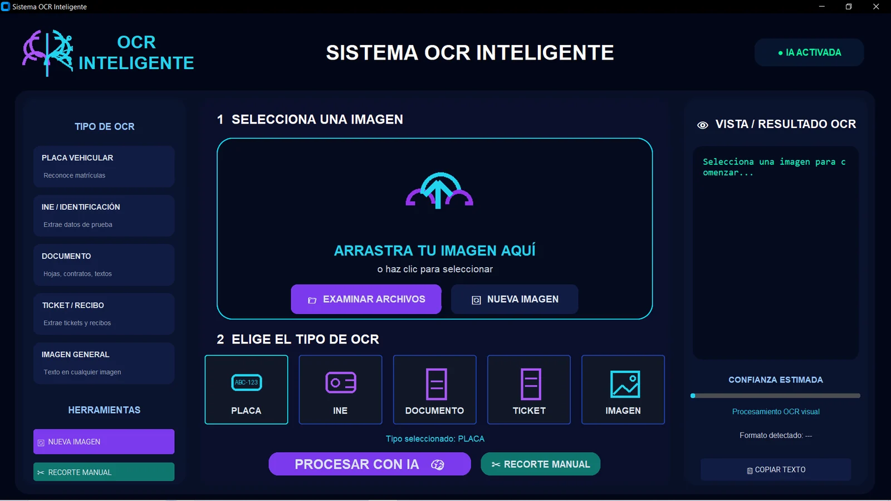
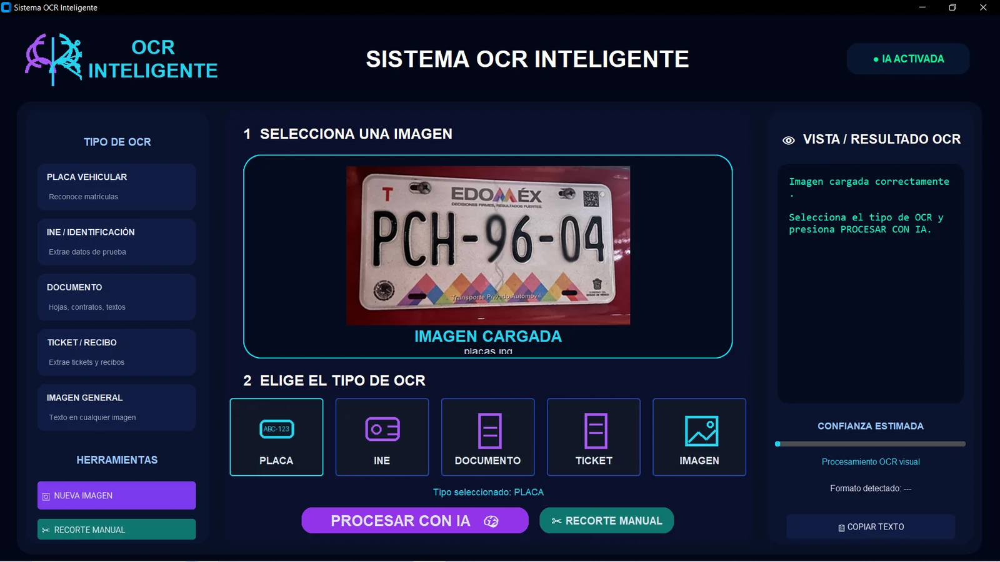
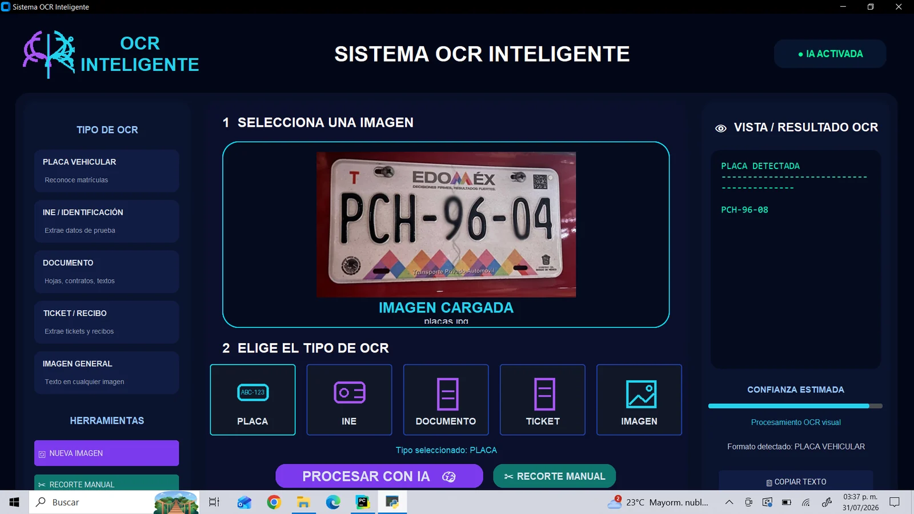
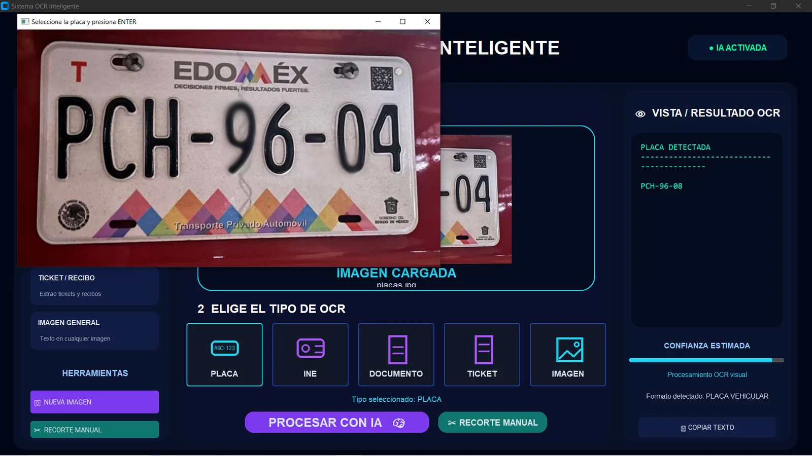
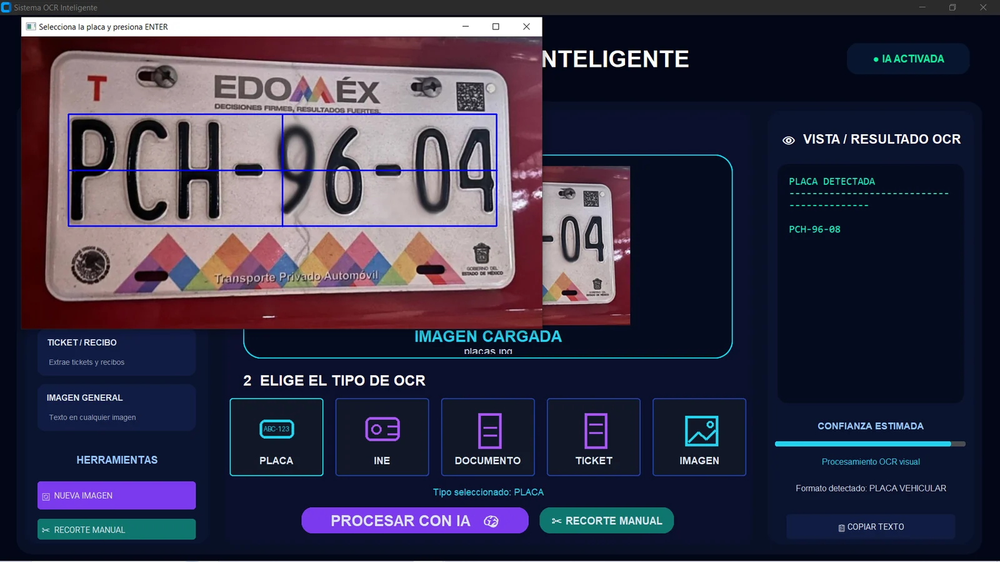
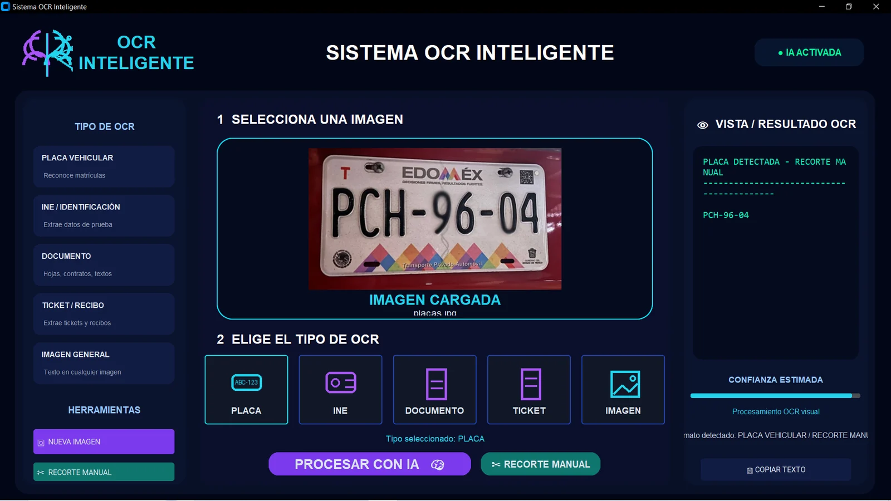

Problema
La lectura manual de placas y documentos consume tiempo y puede producir errores cuando las imágenes tienen ruido, poca iluminación o perspectivas difíciles.
Aplicación de escritorio desarrollada en Python para reconocer texto en placas vehiculares, identificaciones, documentos, tickets e imágenes mediante visión por computadora y OCR.

La lectura manual de placas y documentos consume tiempo y puede producir errores cuando las imágenes tienen ruido, poca iluminación o perspectivas difíciles.
Se implementó un flujo de preprocesamiento de imágenes con escalado, contraste, binarización y limpieza para mejorar la información antes de enviarla al motor OCR.
La galería muestra el proceso desde la selección de la imagen hasta la detección final del texto, incluyendo el modo de recorte manual cuando se requiere una selección más precisa.

Imagen cargadaVista previa antes de iniciar el procesamiento OCR.
Detección automáticaResultado OCR, formato detectado y nivel estimado de confianza.
Recorte manualHerramienta auxiliar para mejorar la precisión en imágenes complejas.
Selección del áreaDelimitación exacta de la región donde se encuentra el texto.
Resultado finalTexto reconocido después del recorte manual y listo para copiar.